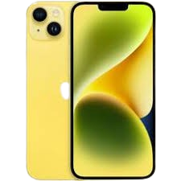
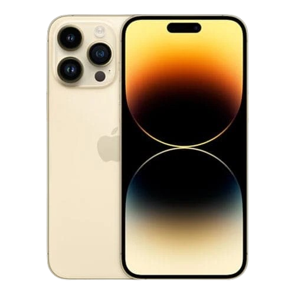
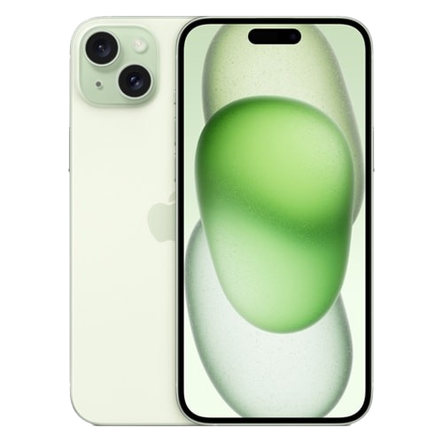
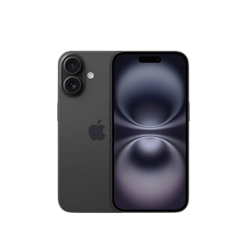
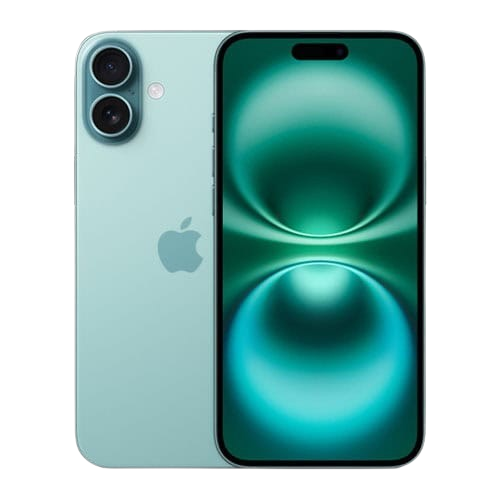
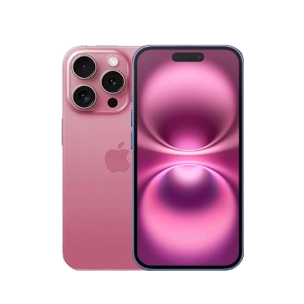

مواصفات: ("iPhone 14 Plus")
أداء الشاشة: ("6.7 انش Super Retina XDR OLED، دقة 1284x2778، دعم HDR10 وDolby Vision، معدل تحديث 60Hz")
أداء المعالج: ("Apple A15 Bionic، سداسي النواة، بدقة تصنيع 5 نانومتر")
الرم: ("6 جيجابايت")
حجم التخزين: ("من, 128 جيجابايت, الى , 512 جيجابايت")
أداء الكاميرا: ("الخلفية 12, 12 ميجابكسل (رئيسية + واسعة)" - الامامية, 12 ميجابكسل + SL 3D")
أداء البطارية: ("4323 مللي أمبير, شحن سريع , 20 واط")
يدعم الجيل: ("5G")
يدعم: بصمة الوجه (Face ID)، مقاومة الماء والغبار بمعيار IP68

مواصفات: ("iPhone 14 Pro Max")
أداء الشاشة: ("6.7 انش LTPO Super Retina XDR OLED، دقة 1290x2796، معدل تحديث 120Hz، دعم HDR10 وDolby Vision")
أداء المعالج: ("Apple A16 Bionic، بدقة تصنيع 4 نانومتر")
الرم: ("6 جيجابايت")
حجم التخزين: ("من, 128 جيجابايت, الى , 1 تيرابايت")
أداء الكاميرا: ("الخلفية 48, 12, 12 ميجابكسل + مستشعر TOF 3D" - الامامية, 12 ميجابكسل + SL 3D")
أداء البطارية: ("4323 مللي أمبير, شحن سريع , 20 واط, شحن لاسلكي MagSafe 15 واط")
يدعم الجيل: ("5G")
يدعم: بصمة الوجه (Face ID)، مقاومة الماء والغبار بمعيار IP68، ميزة Dynamic Island

مواصفات: ("iPhone 15")
أداء الشاشة: ("6.1 انش Super Retina XDR OLED، دقة 1179x2556، دعم HDR10 وDolby Vision، معدل تحديث 60Hz")
أداء المعالج: ("Apple A16 Bionic، بدقة تصنيع 4 نانومتر")
الرم: ("6 جيجابايت")
حجم التخزين: ("من, 128 جيجابايت, الى , 512 جيجابايت")
أداء الكاميرا: ("الخلفية 48, 12 ميجابكسل" - الامامية, 12 ميجابكسل + SL 3D")
أداء البطارية: ("3349 مللي أمبير, شحن سريع , 20 واط")
يدعم الجيل: ("5G")
يدعم: بصمة الوجه (Face ID)، مقاومة الماء والغبار بمعيار IP68، ميزة Dynamic Island
مواصفات: ("iPhone 15 Plus")
أداء الشاشة: ("6.7 انش Super Retina XDR OLED، دقة 1284x2778، دعم HDR10 وDolby Vision، معدل تحديث 60Hz")
أداء المعالج: ("Apple A16 Bionic، بدقة تصنيع 4 نانومتر")
الرم: ("6 جيجابايت")
حجم التخزين: ("من, 128 جيجابايت, الى , 512 جيجابايت")
أداء الكاميرا: ("الخلفية 48, 12 ميجابكسل" - الامامية, 12 ميجابكسل + SL 3D")
أداء البطارية: ("4383 مللي أمبير, شحن سريع , 20 واط")
يدعم الجيل: ("5G")
يدعم: بصمة الوجه (Face ID)، مقاومة الماء والغبار بمعيار IP68، ميزة Dynamic Island
مواصفات: ("iPhone 15 Pro Max")
أداء الشاشة: ("6.7 انش LTPO Super Retina XDR OLED، دقة 1290x2796، معدل تحديث متغير حتى 120Hz، دعم HDR10 وDolby Vision")
أداء المعالج: ("Apple A17 Pro، بدقة تصنيع 3 نانومتر")
الرم: ("8 جيجابايت")
حجم التخزين: ("من, 256 جيجابايت, الى , 1 تيرابايت")
أداء الكاميرا: ("الخلفية 48, 12, 12 ميجابكسل + مستشعر TOF 3D" - الامامية, 12 ميجابكسل + SL 3D")
أداء البطارية: ("4441 مللي أمبير, شحن سريع , 25 واط, شحن لاسلكي MagSafe 15 واط")
يدعم الجيل: ("5G")
يدعم: بصمة الوجه (Face ID)، مقاومة الماء والغبار بمعيار IP68، ميزة Dynamic Island، هيكل من التيتانيوم

مواصفات: ("iPhone 15")
أداء الشاشة: ("6.1 انش Super Retina XDR OLED، دقة 1179x2556، دعم HDR10 وDolby Vision، معدل تحديث 60Hz")
أداء المعالج: ("Apple A16 Bionic، بدقة تصنيع 4 نانومتر")
الرم: ("6 جيجابايت")
حجم التخزين: ("من, 128 جيجابايت, الى , 512 جيجابايت")
أداء الكاميرا: ("الخلفية 48, 12 ميجابكسل" - الامامية, 12 ميجابكسل + SL 3D")
أداء البطارية: ("3349 مللي أمبير, شحن سريع , 20 واط")
يدعم الجيل: ("5G")
يدعم: بصمة الوجه (Face ID)، مقاومة الماء والغبار بمعيار IP68، ميزة Dynamic Island

مواصفات: ("iPhone 16 Plus")
أداء الشاشة: ("6.7 انش Super Retina XDR OLED، دقة 2796x1290، معدل تحديث 60Hz، دعم HDR10 وDolby Vision، سطوع يصل إلى 2000 شمعة")
أداء المعالج: ("Apple A18 Bionic، بدقة تصنيع 3 نانومتر")
الرم: ("8 جيجابايت")
حجم التخزين: ("من, 128 جيجابايت, الى , 512 جيجابايت")
أداء الكاميرا: ("الخلفية 48, 12 ميجابكسل" - الامامية, 12 ميجابكسل + SL 3D")
أداء البطارية: ("4674 مللي أمبير, شحن سريع , 25 واط")
يدعم الجيل: ("5G")
يدعم: بصمة الوجه (Face ID)، مقاومة الماء والغبار بمعيار IP68، ميزة Dynamic Island، زر التحكم بالكاميرا (Camera Control)

مواصفات: ("iPhone 16 Pro Max")
أداء الشاشة: ("6.9 انش LTPO Super Retina XDR OLED، دقة 2868x1320، معدل تحديث متغير حتى 120Hz، دعم HDR10 وDolby Vision، طبقة حماية Ceramic Shield")
أداء المعالج: ("Apple A18 Pro، بدقة تصنيع 3 نانومتر")
الرم: ("8 جيجابايت")
حجم التخزين: ("من, 256 جيجابايت, الى , 1 تيرابايت")
أداء الكاميرا: ("الخلفية 48, 12, 48 ميجابكسل + مستشعر TOF 3D" - الامامية, 12 ميجابكسل + SL 3D")
أداء البطارية: ("4685 مللي أمبير, شحن سريع , 25 واط, شحن لاسلكي MagSafe 15 واط")
يدعم الجيل: ("5G")
يدعم: بصمة الوجه (Face ID)، مقاومة الماء والغبار بمعيار IP68، ميزة Dynamic Island، زر التحكم بالكاميرا (Camera Control)، زر Action Button، هيكل من التيتانيوم